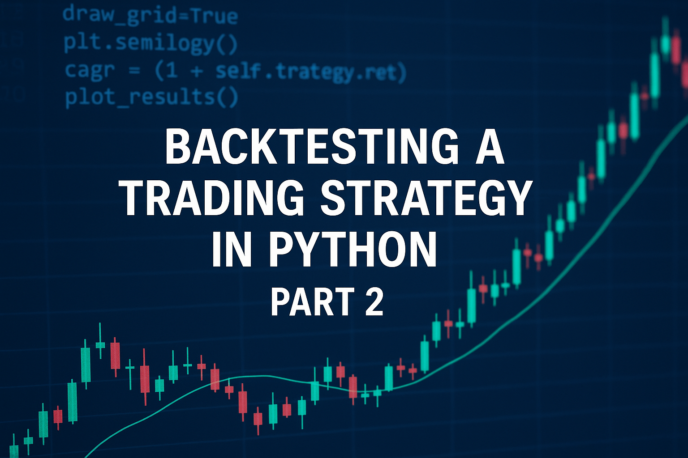

Taking Our Strategy Further: Returns, RSI, MACD & Optimization
If you haven’t already, please read Part 1 of this series where we covered the basics of fetching stock data, computing moving averages, and running a simple backtest using Backtrader in Python.
In this blog, we’re taking it up a notch. This is where the real value lies—measuring the performance of our trading strategy in practical terms: returns, drawdowns, and adding
Measuring Returns and Drawdowns
After your backtest is done, you want to see how your portfolio performed. Here's how you can analyze that using Backtrader's Analyzer module.
import backtrader.analyzers as btanalyzers
cerebro = bt.Cerebro()
# Add your data and strategy
cerebro.addanalyzer(btanalyzers.SharpeRatio, _name='sharpe')
cerebro.addanalyzer(btanalyzers.DrawDown, _name='drawdown')
results = cerebro.run()
first_strat = results[0]
print("Sharpe Ratio:", first_strat.analyzers.sharpe.get_analysis())
print("Max Drawdown:", first_strat.analyzers.drawdown.get_analysis())
This will give you risk-adjusted returns (Sharpe) and maximum drawdown, which is crucial to understand the downside of your system.
Adding RSI and MACD Indicators
Let’s now add momentum indicators to our strategy for more robust signal generation.
class AdvancedStrategy(bt.Strategy):
def __init__(self):
self.sma50 = bt.indicators.SMA(self.data.close, period=50)
self.sma200 = bt.indicators.SMA(self.data.close, period=200)
self.rsi = bt.indicators.RSI(self.data.close, period=14)
self.macd = bt.indicators.MACD(self.data.close)
def next(self):
if self.sma50[0] > self.sma200[0] and self.rsi[0] > 50 and self.macd.macd[0] > self.macd.signal[0]:
if not self.position:
self.buy()
elif self.rsi[0] < 50 or self.macd.macd[0] < self.macd.signal[0]:
if self.position:
self.sell()
This strategy waits for trend confirmation (SMA cross), momentum strength (RSI > 50), and MACD signal confirmation before entering.
Visualizing Performance
Backtrader provides a clean portfolio and trade visual with just:
cerebro.plot()
Optimizing the Strategy
Backtrader supports optimization with just a few tweaks. Example below optimizes SMA periods:
class SMAStrat(bt.Strategy):
params = (("pfast", 10), ("pslow", 30))
def __init__(self):
sma1 = bt.ind.SMA(self.data.close, period=self.p.pfast)
sma2 = bt.ind.SMA(self.data.close, period=self.p.pslow)
self.crossover = bt.ind.CrossOver(sma1, sma2)
def next(self):
if not self.position and self.crossover > 0:
self.buy()
elif self.position and self.crossover < 0:
self.sell()
cerebro.optstrategy(SMAStrat, pfast=range(10, 60, 10), pslow=range(100, 220, 20))
cerebro.run()
This helps identify the best-performing SMA crossover parameters over historical data.
Key Metrics to Track
- Final Portfolio Value
- Maximum Drawdown
- Sharpe Ratio
- Total Trades Executed
- Win Rate / Accuracy
Conclusion
You now know how to not just run a backtest, but analyze it deeply with risk metrics, combine multiple indicators, and run parameter optimization. These are foundational skills for building real-world algorithmic trading systems in Python.
If you’ve made it this far—congratulations. Most people stop at downloading a chart. But now you’re building logic-driven systems. Keep going!
In future posts, I’ll explore building a dashboard or screener that lets you backtest multiple strategies across different stocks at once.